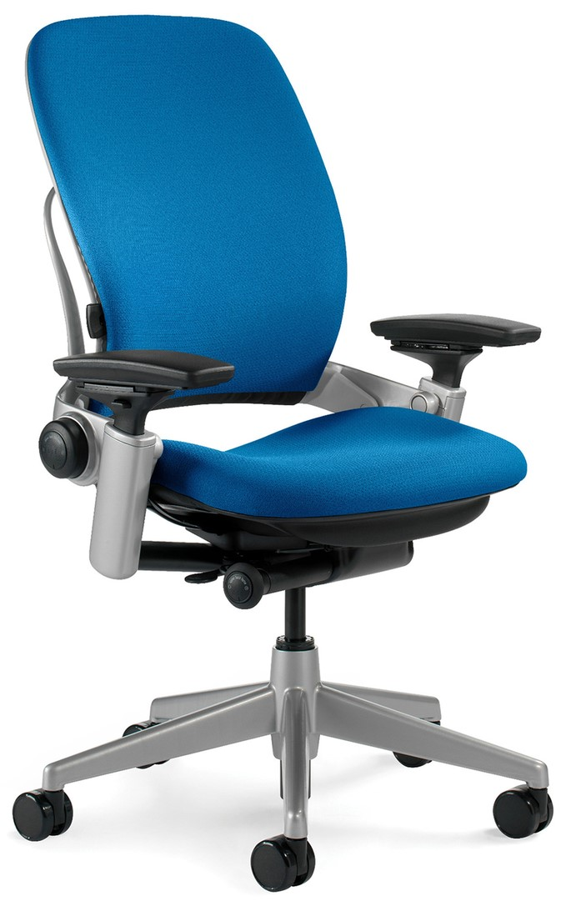
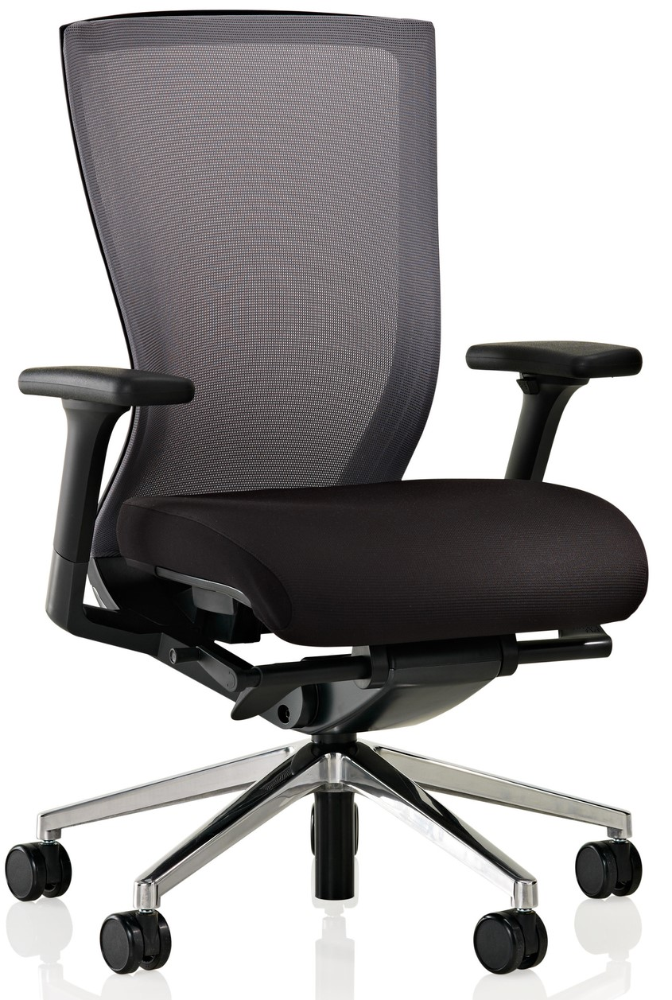

Accessibility
TIL strives to create an inclusive learning environment. On top of classroom accessibility upgrades, accommodation furniture is provided when possible to offer a comfortable learning environment for all.
Accommodation Furniture
HEIGHT ADJUSTABLE TABLES are provided at designated barrier-free seating spots. JUMP SEATS at front or rear of classroom allow space for ambulatory device or specialty seating. ERGONOMIC TASK CHAIRS are selected as a universal solution to accommodate a broad range of accessible needs.
Criteria
ACE works in conjunction with Accessibility Services to define the parameters of accommodation chairs:
- Chair must be relatively simple for first time user to understand
- Chair must offer easy arm adjustability, and chair must offer easy lumber support adjustability
Chair Fair
After initial screening through show room visits, top candidates were brought in for evaluations. During the chair fairs ACE hosted, accessibility experts, students, and staff were asked to physically test features of proposed chairs. Features in our review include but are not limited to; lumber support, arm adjustability, general ease of use, tension knob, tilt lock, and seat pan.
Conclusions
Two chair designs are selected:
Leap Chair
View user manual Altus Chair
View user manual Please contact Accessibility Services for further information should you feel you require an accommodation chair.